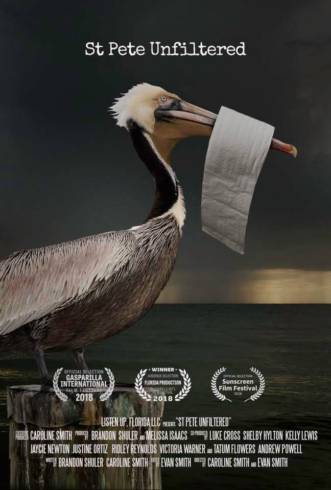

Welcome to Florida's first green(washed) city.
Since 1977, five years after the Clean Water Act mandated that municipalities bring their waste water treatment systems into compliance with the Act's conservation measures, the City of St Petersburg has not increased its treatment capacity in the face of a growing population. In fact, on April 2nd, 2015, the City of St Petersburg decreased its waste water treatment capacity by closing the Albert Whitted Waste Water Treatment Facility, knowing that the remaining three treatment facilities could not handle the increased treatment burden. From April 2015 until 2017, while claiming itself to be Florida's greenest city, St Petersburg's Mayor Rick Kriseman and Public Works staff knowingly violated the Clean Water Act by dumping more than 1-billion gallons of sewage into Tampa Bay, its aquifer, and its beloved surrounding waters, resulting in 89 felonies and 103 misdemeanors. These crimes come at an expense of 326-million dollars to the citizens of St Petersburg and its surrounding communities.
In addition to writing ad copy and slogans, my role as Research Producer involved interviewing and translating the work public health and environmental experts as well as the city officials involved with the city's wastewater infrastructure and sewage spills. Our efforts led to St. Petersburg settlings a years old environmental suit, agreeing to amendments to the city’s consent order with the Florida Department of Environmental Protection